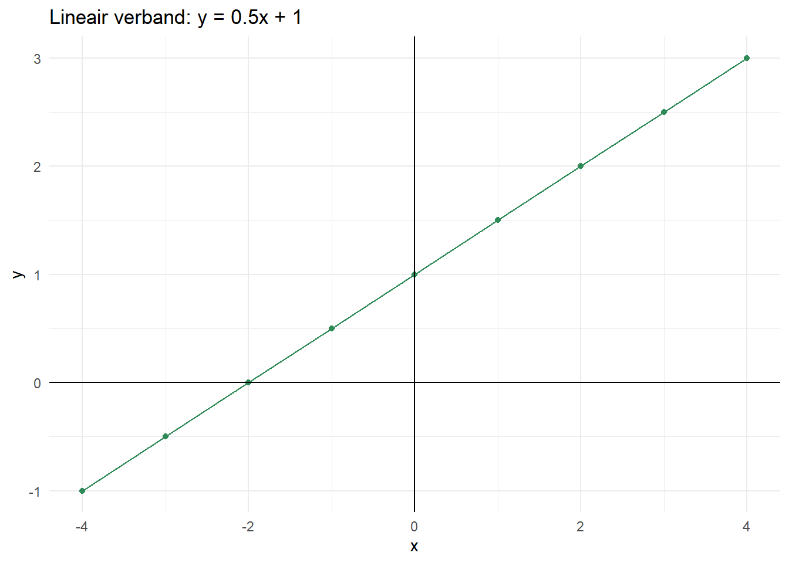
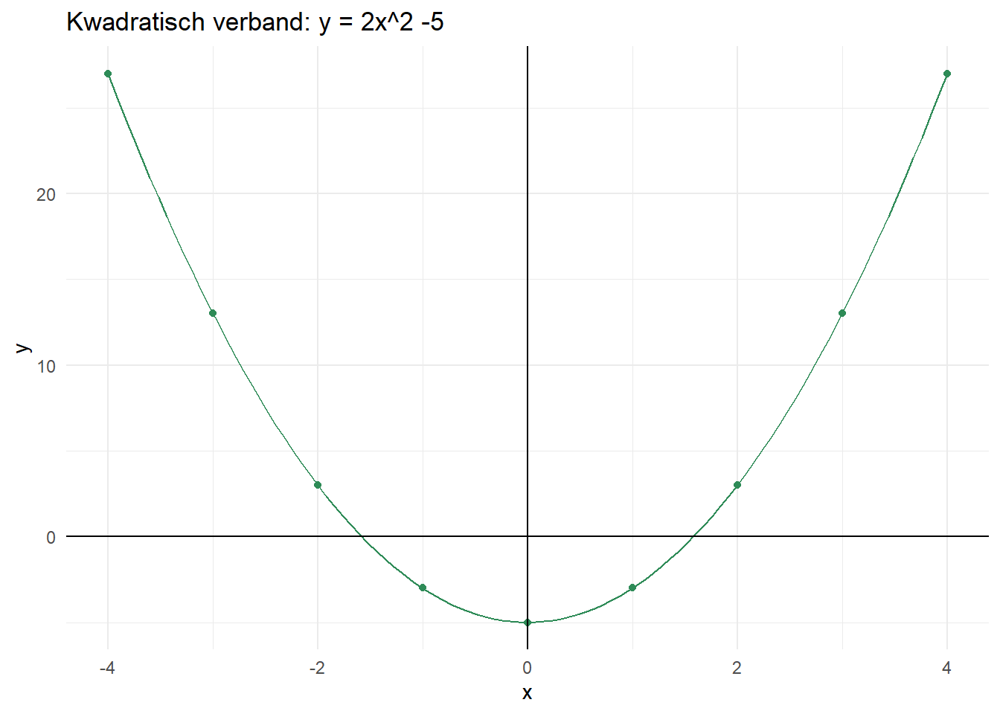

1 Algebra
1.1 Introductie
Een vergelijking is een wiskundige relatie die één of meerdere onbekende variabelen bevat. We kunnen erachter komen wat de waarde van deze onbekende variabele is door de vergelijking op te lossen. Dit hoofdstuk geeft meer informatie over het oplossen van vergelijkingen.
1.2 Volgorde van bewerkingen
Wiskundige bewerkingen worden altijd in de volgende vaste volgorde uitgewerkt:
haakjes
machtsverheffen en worteltrekken
vermenigvuldigen en delen
optellen en aftrekken
Bewerkingen die op dezelfde plek staan, zijn gelijkwaardig en worden van links naar rechts uitgevoerd.
1.3 Vergelijkingen met één onbekende
In wiskundige vergelijkingen zijn we vaak geinteresseerd in de waarde van één of meerdere onbekenden. Als we bijvoorbeeld de vergelijking \(2x = 4\) hebben, willen we graag weten voor welke waarde van \(x\) dit geldt. Deze vergelijking is zo simpel dat je het misschien meteen ziet: als \(x\) gelijk is aan \(2\), staat er \(2 \cdot 2\), en klopt de vergelijking. Maar het is niet altijd eenvoudig om direct af te lezen welke waarde \(x\) moet hebben om de vergelijking kloppend te maken. Hoe lossen we bijvoorbeeld de vergelijking \(3x +2 = 7\) of \(2(x-8) = -10 - x\) op? Allereerst is het belangrijk om te begrijpen dat deze vergelijkingen lineaire verbanden beschrijven.
1.3.1 Lineaire verbanden
In een lineaire verband komen geen kwadraten of hogere machten in voor. We kunnen een lineair verband opschrijven in de algemene vorm \(y = ax + b\). Hierbij zijn \(x\) en \(y\) de variabelen, en \(a\) en \(b\) de parameters. De parameter \(a\) zegt iets over hoe snel \(y\) toeneemt of afneemt als een functie van \(x\). De parameter \(b\) defineert de beginwaarde, oftewel de waarde van \(y\) als \(x\) gelijk is aan nul. Deze relatie tussen \(x\) en \(y\) kunnen we nu weergeven in een assenstelsel:
De rechte lijn in de grafiek geeft aan dat we te maken hebben met een lineair verband.
1.3.2 Vergelijking oplossen
Om vergelijkingen op te lossen maken we gebruik van simpele algebraïsche handelingen, waarvan de balansmethode de meest belangrijke is: zo lang je aan beide kanten van het \(=\) teken dezelfde bewerkingen doet, blijft de vergelijking altijd gelden. Als je aan beide kanten van het \(=\) teken dezelfde hoeveelheid optelt, aftrekt, of met dezelfde hoeveelheid vermenigvuldigt, is er feitelijk niets veranderd. Om lineaire vergelijkingen op te lossen kun je gebruik maken van het volgende stappenplan:
Stappenplan lineaire vergelijkingen:
Haakjes uitwerken.
Alles met de variabele naar links.
Alles zonder de variabele naar rechts.
Delen door het getal voor de variabele.
Voorbeeld: \(2(x-8) = - 10 - x\)
\(2x-16 = - 10 - x\)
Aan beide kanten x optellen: \(3x-16 = - 10\)
Aan beide kanten 16 aftrekken: \(3x = 6\)
Aan beide kanten delen door 3: \(x = 6/3 \rightarrow x = 2\)
1.3.3 Kwadratische verbanden
Een kwadratisch, of tweedegraads, verband heeft de vorm \(y = ax^2 + bx + c\).

Het oplossen van een kwadratische vergelijking kan op verschillende manieren. Stel allereerst je voor dat \(c = 0\). In dit geval bevatten alle termen \(x\), en kunnen we \(x\) buiten haakjes halen. Je krijgt dan twee oplossingen, waarvan er altijd één is waarbij \(x=0\). Bekijk bijvoorbeeld hetvolgende voorbeeld:
Stappenplan kwadratische vergelijkingen:
Haakjes uitwerken.
Alles met de variabele naar links.
Alles zonder de variabele naar rechts.
Delen door het getal voor de variabele.
Voorbeeld: \(2x^2 + 4x = 0\)
\(x(2x+4) = 0\)
\(x(2x+4)\) is gelijk aan 0, als:
\[ x = 0 \]
OF
\[2x+4 = 0\] \[2x = -4\] \[x = -4/2\] \[x = -2\]
Als \(c\) echter niet gelijk is aan \(0\), is er een derde term die geen \(x\) bevat. Het oplossen van kwadratische vergelijkingen waarbij er een term is die geen \(x\) bevat kan niet opgelost worden door \(x\) buiten haakjes te halen. Dit is het geval voor vergelijkingen met de vorm \(y = ax^2 + bx + c\) (waarbij \(c \neq 0\)). Hiervoor kunnen we de abc-formule gebruiken. Deze formule geeft de twee mogelijke oplossingen: \(x_{1} = \frac{-b + \sqrt{b^2 - 4ac}}{2a}\) en \(x_{2} = \frac{-b - \sqrt{b^2 - 4ac}}{2a}\).
1.4 Opdrachten
Oefening 1.1 Los de volgende vergelijkingen op:
a.
\(3x + 5 = 11\)
b.
\(x^2 + 2x - 8 = 0\)
c.
\(x^2 - 9 = 0\)
Oefening 1.2 Vereenvoudig de volgende uitdrukking:
\((ax-2by)(3y-4bx)+2b(2ax^2+3y^2)-8xyb^2\)
Oefening 1.3 Los de vergelijkingen op voor de aangegeven variabele (geef je antwoord in de vorm variabele = …):
a. vind \(r\) in: \(3r + 2 - 5(r+1) = 6r+4\)
b. vind \(x\) in: \(x + {4 \over x} =4\)
c. vind \(N\) in: \((b-{N \over k})N=0\)
d. vind \(N\) in: \((b-d(1+{N \over k}))N=0,\;\;d \ne 0;\;k \ne 0\)
e. vind \(N\) in: \((\frac{b}{1+N/h}-d)N=0, \;b \ne 0\)